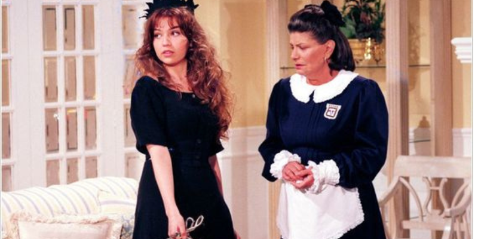

Liste suas histórias favoritas
Use o menu acima para adicionar e listar suas novelas favoritas. Explore o carrossel para ver algumas das nossas novelas recomendadas. Ah, se você ainda não assistiu a uma novela mexicana, está perdendo uma verdadeira dose de emoção, romance e momentos de pura fofura! Essas novelas têm uma magia especial. Elas nos fazem rir, chorar e torcer por aqueles casais que parecem ter saído de um conto de fadas.